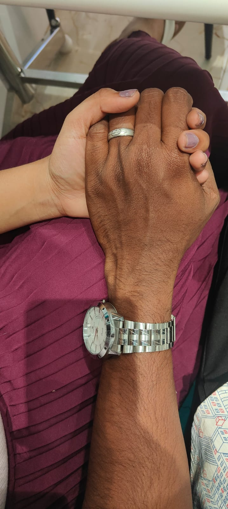

I just used 100 languages to say thank you for your birth, but it's more than that.
Thank you for being born.
Gracias por nacer.
Merci d'être né.
Danke, dass du geboren bist.
Grazie per essere nato/a.
Obrigado por teres nascido.
Bedankt dat je geboren bent.
Спасибо, что ты родился.
生まれてくれてありがとう (Umarete kurete arigatou).
谢谢你的出生 (Xièxiè nǐ de chūshēng).
태어나줘서 고마워 (Tae-eonajwoseo gomawo).
شكرًا لولادتك (Shukran li waladatik).
Ευχαριστώ που γεννήθηκες (Efcharistó pou genníthikes).
जन्म के लिए धन्यवाद (Janm ke liye dhanyavaad).
Doğduğun için teşekkür ederim.
Tack för att du är född.
Dziękuję, że się urodziłeś/urodziłaś.
Cảm ơn bạn đã sinh ra.
ขอบคุณที่เกิดมา (Khop khun thi keid maa).
Terima kasih telah lahir.
Děkuji, že jsi se narodil/narodila.
Köszönöm, hogy megszülettél.
תודה שנולדת (Toda she'noladta).
Mulțumesc că te-ai născut.
Дякую, що ти народився/народилася (Dyakuyu, shcho ty narodivsya/narodylasya).
Salamat sa iyong pagkabuhay.
Kiitos, että synnyit.
জন্মের জন্য ধন্যবাদ (Jônmēr jônnô dhônnôbād).
Takk for at du ble født.
Tak fordi du blev født.
Terima kasih kerana dilahirkan.
Gràcies per néixer.
Хвала што си се родио/родила (Hvala što si se rodio/rodila).
Hvala što si se rodio/rodila.
Благодаря, че се родиш (Blagodarya, che se rodish).
Ačiū, kad gimėte.
Ďakujem, že si sa narodil/narodila.
მადლობა რომ დაიბადე (Madloba rom daibade).
Aitäh, et sündisid.
ജനനത്തിന് നന്ദി (Jananaththinnu nandi).
ਪਿਆਰ ਤੇ ਪੈਦਾ ਕਰਨ ਲਈ ਧੰਨਵਾਦ (Piyāra tē paidā karan la'ī dhanavāda).
ಜನಿಸಲು ಧನ್ಯವಾದ (Janisalu dhan'yavāda).
பிறந்ததற்கு நன்றி (Piṟantatarku naṉṟi).
పుట్టించడానికి ధన్యవాదాలు (Puttiṉcaḍānika dhan'yavādālu).
जन्माला आभार (Janmālā ābhāra).
જન્મ આપવા માટે આભાર (Janma āpavā māṭē ābhāra).
Дякую, що ти народився/народилася (Dyakuyu, scho ty narodivsya/narodylasya).
Dankon pro via naskiĝo.
Dankie dat jy gebore is.
Go raibh maith agat as do bhreithlá.
Diolch am gael ei eni.
Zure jaiotzeagatik eskerrak.
Þakka þér fyrir að vera fædd/ur.
Gratias tibi ago quod natus es.
Asante kwa kuzaliwa.
Tug'ilganingiz uchun rahmat.
Туғаны
ң үшін рахмет (Tuğanıñ üşin rahmet).
Барои таваллудат шуморо шукронам (Baroi tavaludat shumoro shukronam).
Doğulduğunuz üçün təşəkkür edirəm.
Mahadsanid inaad dhalatay.
Mèsi pou fèt ou.
زه تاسو زه پیدا کړه (Za taso za paida kare).
Spas dikim ku ji dinyayê hatiye.
Kea leboha ho utloa.
Misaotra ny nanoratra.
Ua tsaug rau koj tsev kawm ntawv.
သင့်ကိုမှာစားသောအချက်အလက် (Sain kyaun htet myat hteg a chit a lek).
Ghjè in grazia per esseti nasciutu.
የትውልድ እንቅስቃሴ ለአንተ እናመሰግናለን (Yät'ew'ild ēnq'sqase lā'anät'ē ēnamäsäggenälän).
Imela kwa na isi gafe.
Ngiyabonga ngokuthi uthwele.
जन्मको लागि धन्यवाद (Janmakō lāgi dhan'yavāda).
جنم کان موقع توھان جي مهرباني (Janam kān moqā tuhān jī meharbānī).
Ndiyabulela ngokuba waphumela.
زه تاسو زه پيدا کړه (Za taso za peyda kare).
နောက်ဆုံးအတွက် ကြိုးစားသောအချက်အလက် (Naukhsam atwek khyaul sha teinzat sha).
Tug'ilganingiz uchun rahmat.
Matur nuwun tumon meneh.
Nagode da aka budeka.
Salamat sa pagkatawo.
Grazzi talli twelidt.
Ua tsaug rau koj li cas los.
Төрснийд тань баярлалаа (Törsniid tan' bayarlalaa).
ජනපදයට ස්තුතියි (Janapadayata sutthiyi).
Mahadsanid inaad dhalatay.
जन्मको लागि धन्यवाद (Janmakō lāgi dhan'yavāda).
Kea leboha ho utloa.
जन्मको लागि धन्यवाद (Janmakō lāgi dhan'yavāda).
Asante kwa kuzaliwa.
پیدا ہونے کے لئے شکریہ (Paida hone ke liye shukriya).
Tēnā koe mō tō whānautanga.
O ṣeun fun awọn ti o ti ti.
Salamat sa imong pagkatawo.
Tēnā koe mō tō whānautanga.
Fa'amalie atu ia te oe mo lou fanau.
Շնորհակալություն ծնունդի համար (Shnorhakalutyun tsnundhi hamar).
Malo 'aupito 'oku 'i ai ho'omou lahi.
ހެޔޮ އަށް މި މަޢާމަލާ (Heyo as mi maamaaya).
Vinaka ni ko sa sucu.
Si Yu'us ma'åse para iyo na kubrimento.

Happy birthday to the man who makes my heart skip a beat with every look. You are a blessing in my life, and I want to make this day to be as special as you are to me.
you are the reason behind my smiling face every day, I am honored to share my life journey with you.
Having you in my life is the purest form of bliss.You deserve more, the best things for us is yet to come my dear.